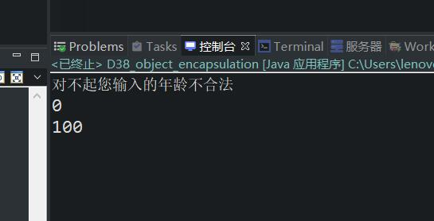

原文连接:https://www.cnblogs.com/ruigege0000/p/11651528.html
一、封装的步骤
（1）所有属性私有化，使用private关键字进行修饰，private表示私有的，修饰的所有数据只能在本类中进行访问。
（2）对外提供简单的操作入口，也就是说以后外部程序要想访问age属性的话，必须通过这些简单的入口才能进行访问。
i.对外提供两个公开的方法，分别是set方法和get方法
ii.修改属性的话，就使用set方法；访问属性的话，就使用get方法
二、set方法的命名规范
public void setAge(int a){
age = a;
}
三、get的方法的命名规范
public void setAge(int a){
age = a;
}
四、注意点
（1）setter and getter方法没有static关键字
（2）有static关键字修饰的方法怎么调用：类名.方法名（实参）；
（3）没有static关键字修饰的方法怎么调用：引用.方法名（实参）；
举个例子，先写一个类，然后再调用它
package com.bjpowernode.java_learning;
public class User {
//属于私有化
private int age;
//setter
public void setAge(int a) {
if (a<0 || a>150) {
System.out.println("对不起您输入的年龄不合法");
return;
}else {
age = a;
}
}
//getter
public int getAge() {
return age;
}
}
我们再编写函数来调用它
package com.bjpowernode.java_learning;
public class D38_object_encapsulation {
public static void main(String[] args) {
//闯将user对象
User user = new User();
user.setAge(1000);
int age1 = user.getAge();
System.out.println(age1);
user.setAge(100);
int age2 = user.getAge();
System.out.println(age2);
}
}
我们进行程序运行

快捷键：我们在编写一个类的时候，将各个private属性写好了之后，在空白处点击右键-源代码-生成getter和setter即可，自动生成
五、构造方法
1.构造方法又被称为构造函数、构造器、Constructor
2.构造方法语法结构：
[修饰符列表] 构造方法名（形式参数列表）{
构造方法体；
}
3.回顾普通方法的语法结构：
[修饰符列表] 返回值类型 方法名（形式参数列表）{
方法体；
}
4.对于构造方法来说，“返回值类型”是不需要指定的，并且也不能写void，只要写上void那么这个方法就成为了普通方法
5.对于构造方法来说，构造方法的方法名必须和类型保持一致
6.构造方法的作用是什么：
构造方法存在的意义在于，通过构造方法的调用，可以创建对象。
7.构造方法应该怎么调用？
普通方法是这样调用的的：方法修饰符中有static的时候：类名.方法名（实参）；方法修饰符列表中没有static的时候：引用,方法名（实参列表）
new 构造方法名（实参列表）
8.构造方法执行调用之后，有返回值吗？
每一个构造方法执行结束之后都有返回值，但是这个“return 值；”这样的语句不需要写，构造方法结束的时候java程序自动返回值。并且返回值类型是构造方法所在类的类型。由于构造方法的返回值类型就是类本身，所以返回值类型不需要写。（我们可想而知为什么名称上要保持一致）
六、源码：
D38_object_encapsulation.java
User.java
地址：
https://github.com/ruigege66/Java/blob/master/D38_object_encapsulation.java
https://github.com/ruigege66/Java/blob/master/User.java
2.CSDN：https://blog.csdn.net/weixin_44630050（心悦君兮君不知-睿）
3.博客园：https://www.cnblogs.com/ruigege0000/
4.欢迎关注微信公众号：傅里叶变换，个人公众号，仅用于学习交流，后台回复”礼包“，获取大数据学习资料